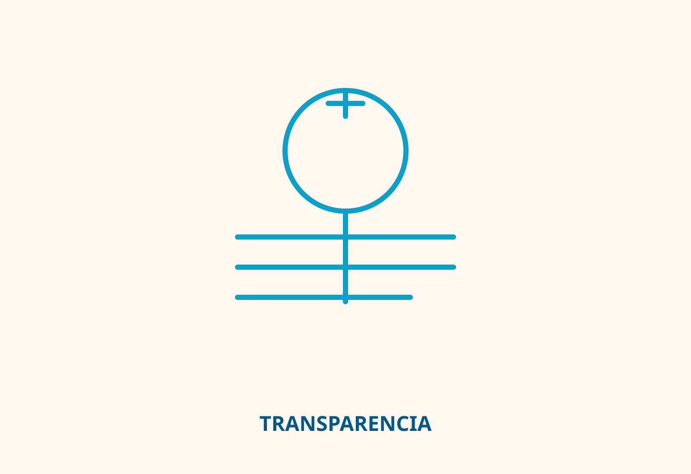
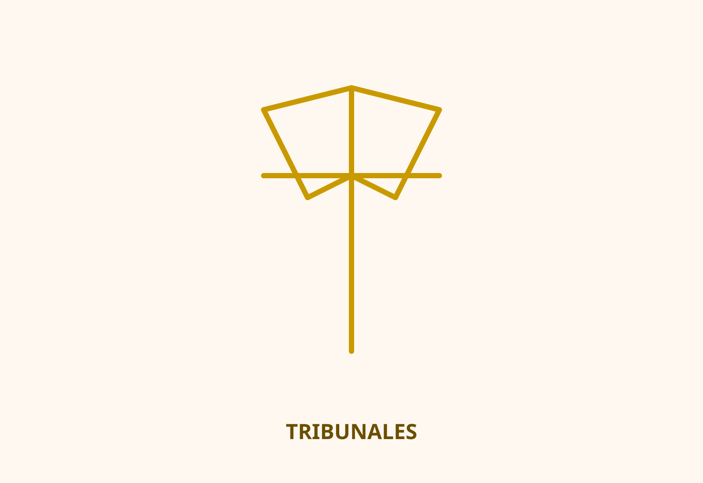
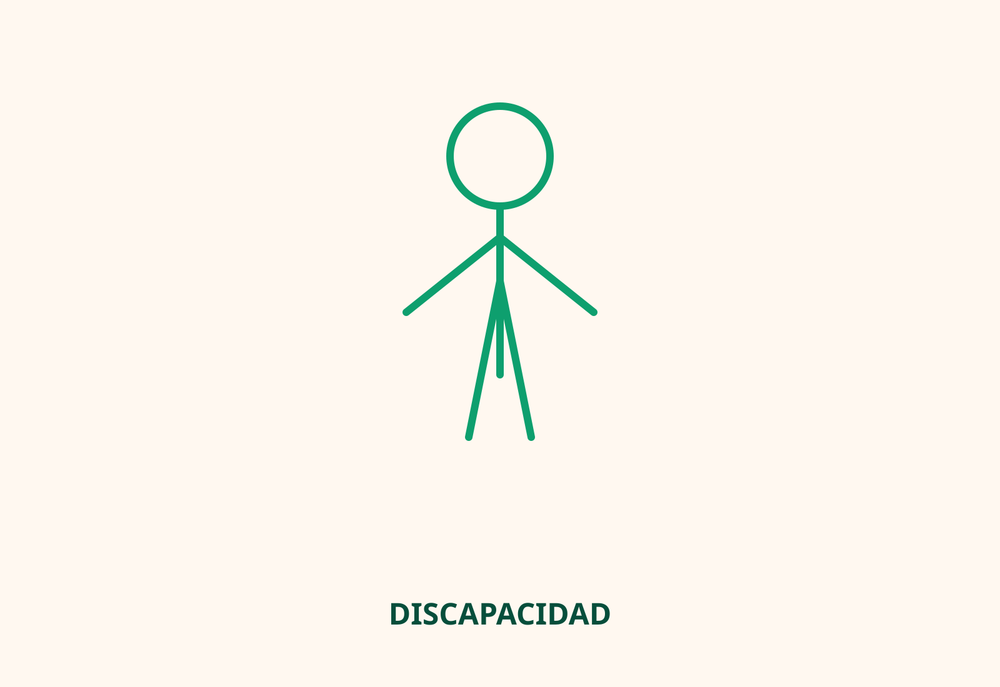
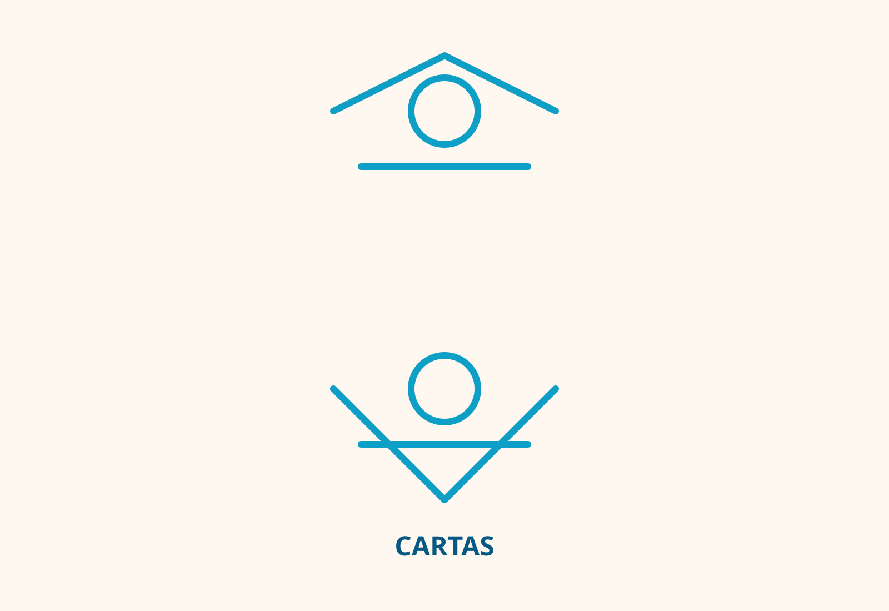

Solicitudes de laboratorio (2025–2026)
Órdenes de laboratorio de diabetología, medicina interna y neurología, con los exámenes solicitados.
Expediente y respaldo 03
Denuncias, transparencia, superintendencia, tribunales, discapacidad y cartas del expediente.
Expediente y respaldo
 Denuncias
Presentaciones ante Contraloría por paralización de sumario y abandono de deberes.
4 documentos
Denuncias
Presentaciones ante Contraloría por paralización de sumario y abandono de deberes.
4 documentos

Transparencia Solicitudes de acceso a la información, OIRS y listas de espera del HEC. 4 documentos Superintendencia
Reclamos y denuncias ante la Intendencia de Prestadores por vulneraciones a la Ley 20.584.
8 documentos
Superintendencia
Reclamos y denuncias ante la Intendencia de Prestadores por vulneraciones a la Ley 20.584.
8 documentos

Tribunales Causa penal CAJ Metro, recurso de protección, partes policiales y orientación jurídica. 8 documentos
Discapacidad Certificados SENADIS, Registro Civil, pensión de invalidez, RSH y antecedentes. 9 documentos
Cartas Correspondencia formal: interpelaciones, notificaciones y cartas al HEC e INDH. 6 documentosTodos los documentos
Ordenados por fecha, del más reciente al más antiguo.
Órdenes de laboratorio de diabetología, medicina interna y neurología, con los exámenes solicitados.
Órdenes de ecografía, tomografía de cerebro, uroflujometría y eco de estrés.
La Contraloría remite las denuncias al Hospital El Carmen y el director responde que el sumario 2478 sigue en etapa indagatoria.
Oficio que declara inadmisible el reclamo 5008126 por no observar vulneraciones a la Ley N° 20.584.
Presentación ante la Contraloría General por la paralización del sumario administrativo Res. Ex. N° 2478 y la falta de respuesta del Hospital El Carmen.
Compilación de escritos de denuncia por falta a la probidad, obstrucción administrativa y dilación injustificada.
Denuncia por falta grave a la probidad administrativa, obstrucción del procedimiento y abandono de deberes en el Hospital El Carmen.
Evaluación preoperatoria de medicina interna para colecistectomía laparoscópica por colelitiasis.
Correo y cartas de interpelación por la respuesta dilatoria a la SAI AO111T0001708 y la activación de la clave verde.
Oficio de la Intendencia de Prestadores que deriva el reclamo 5007075 al Hospital El Carmen para respuesta directa.
Escrito presentado a la Intendencia de Prestadores por la falta de reparación y el abandono del paciente.
Interconsultas a traumatología y neurología por dolor lumbar crónico y hernia del núcleo pulposo L5-S1.
Reclamo por falta de servicio grave, vulneración de la seguridad del paciente y abandono técnico.
Carta que notifica responsabilidad personal por la vejación injusta y la activación de la clave verde.
La Corte de Apelaciones declara inadmisible el recurso y remite la materia a la Superintendencia de Salud.
Ampliación de la denuncia penal con los hechos del 2 de abril de 2026 y solicitud de diligencias urgentes.
Recurso de protección por vulneración del derecho a la vida, integridad física y salud, con solicitud de orden de no innovar.
Informe ambulatorio con el ajuste de tratamiento cardíaco y el resumen metabólico de marzo.
Prórroga de 10 días hábiles, Carta N° 708 y correo de respuesta del Hospital El Carmen a la solicitud de transparencia.
Receta de bisoprolol 5 mg y empagliflozina 25 mg, con vigencia de 180 días.
Denuncia ante la Superintendencia por bloqueo de la tutela administrativa y respuesta del Hospital El Carmen al folio 3180597.
Reclamo contra el Hospital El Carmen por obstrucción al derecho de reclamo y falta de notificación de respuestas.
Oficio de la Superintendencia que formaliza el reclamo 5005142 y solicita al HEC el expediente clínico y administrativo.
Resultados de laboratorio con glicemia 160 mg/dL, HbA1c 8,5%, creatinina 1,09 y VHS 43.
Ecocardiograma con FEVI biplano de 47%, ventrículo izquierdo hipertrófico leve y disfunción diastólica grado I.
ECG con frecuencia de 78 lpm, PR de 214 ms, QRS de 150 ms y QTc de 442 ms; informe no confirmado.
Denuncia formal por el vencimiento del plazo del folio OIRS 3146846 y por la conducta de funcionarias de atención al usuario.
Solicitud de patrocinio y representación judicial a la Corporación de Asistencia Judicial Metropolitana.
Solicitud de acceso a la información sobre el sumario 2478, la solicitud de fuerza pública y el protocolo de clave verde.
Respuesta del Hospital El Carmen a la solicitud OIRS 3129968, con entrega del informe psiquiátrico y correo de notificación.
Cartola del RSH que ubica al hogar en el tramo 40% y resume integrantes, dependencia e ingresos.
Certificado del Registro Civil que acredita ausencia de anotaciones en los registros de condenas.
Recetas de empagliflozina, aspirina y bisoprolol emitidas por cardiología.
Informe del psiquiatra tratante que confirma trastorno de estrés postraumático y psicosis lúcida de origen orgánico.
Comprobante de pago de la pensión de invalidez, con haberes, descuentos y monto líquido.
Receta crónica de tamsulosina 0,4 mg para el adenoma benigno de próstata.
Interconsulta a kinesiología para rehabilitación motora después de la cirugía de túnel carpiano izquierdo.
Epicrisis de la liberación quirúrgica del túnel carpiano izquierdo, sin incidentes y con evolución favorable.
Informe de marcha con cadencia de 91 pasos/min, velocidad de 1,2 km/h y asimetría de apoyo.
Reclamo por incumplimiento de los compromisos de la reunión del 20 de mayo de 2025 y respuesta del Hospital El Carmen.
Reiteración de la carta del 29 de mayo, con la exigencia de respuestas concretas antes del 3 de junio de 2025.
Carta por el incumplimiento sistemático de los compromisos de la reunión del 20 de mayo de 2025.
Interconsulta por insuficiencia venosa profunda bilateral de las extremidades inferiores.
Carabineros informa que el parte N° 7265 fue enviado a la Fiscalía y que se instruyó una investigación administrativa.
Correo enviado al INDH dos semanas después de la agresión, con la descripción de los síntomas y el miedo persistente.
Oficio que pide a Carabineros investigar la actuación policial denunciada al interior del hospital.
Oficio del Servicio Nacional de la Discapacidad que informa al Hospital El Carmen la denuncia por apremios ilegítimos.
Copia del parte policial por los hechos ocurridos al interior del Hospital El Carmen el 13 de agosto de 2024.
Relato personal de la consulta traumatológica y de la agresión ocurrida en el Hospital El Carmen.
Certificado del Registro Civil que acredita discapacidad global leve de 13,40%, causa física y movilidad reducida.
Credencial del Registro Nacional de la Discapacidad con el grado global y la causa principal.
Dos certificados del neurólogo que acreditan las secuelas del ACV y la limitación para trámites presenciales.
Evaluación funcional con Mini Best Test 14/28, Up and Go de 20 segundos y velocidad de marcha de 0,87 m/s.
Instructivo de orientación sobre listas de espera quirúrgica, interconsultas y derivaciones del Hospital El Carmen.
Formulario modelo para preparar un recurso de protección ante la Corte de Apelaciones.
Listado de clínicas jurídicas y orden de atención de la Corporación de Asistencia Judicial.
SENADIS detalla las gestiones realizadas, la derivación a la CAJ y los límites de su competencia.
Nota: estos 57 documentos (más la ficha de emergencia) constituyen el expediente completo extraído del archivo personal.